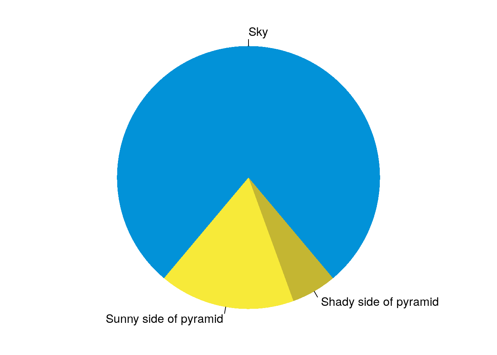

R Markdown
This is an R Markdown document. Markdown is a simple formatting syntax for authoring HTML, PDF, and MS Word documents. For more details on using R Markdown see http://rmarkdown.rstudio.com.
\[\frac{\sqrt{x_1^2 + x_2^2} - 1}{\oint f\cdot \mathbf{dr}}\]
You can embed an R code chunk like this:
summary(cars)
## speed dist
## Min. : 4.0 Min. : 2.00
## 1st Qu.:12.0 1st Qu.: 26.00
## Median :15.0 Median : 36.00
## Mean :15.4 Mean : 42.98
## 3rd Qu.:19.0 3rd Qu.: 56.00
## Max. :25.0 Max. :120.00
fit <- lm(dist ~ speed, data = cars)
fit
##
## Call:
## lm(formula = dist ~ speed, data = cars)
##
## Coefficients:
## (Intercept) speed
## -17.579 3.932Including Plots
You can also embed plots. See Figure 1 for example:
par(mar = c(0, 1, 0, 1))
pie(
c(280, 60, 20),
c('Sky', 'Sunny side of pyramid', 'Shady side of pyramid'),
col = c('#0292D8', '#F7EA39', '#C4B632'),
init.angle = -50, border = NA
)

Figure 1: A fancy pie chart.